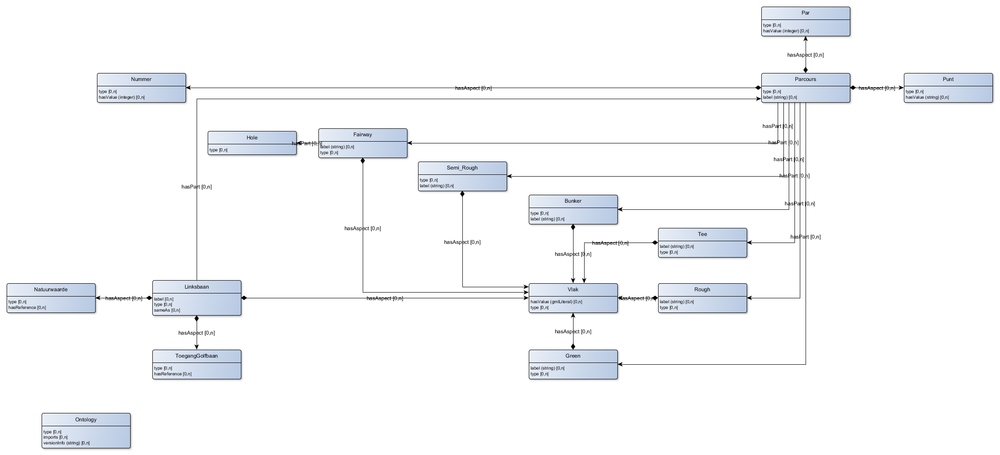

Steeds meer wordt linked data gebruikt als uitwissel- en publicatiemechanisme voor geo-informatie. NEN 3610 is de standaard voor het uitwisselen van geo-informatie, gebruikt UML als formele taal voor het vastleggen van semantiek en beveelt GML aan als technische uitwisselingsformat. NEN 3610 is hiermee niet voorbereid om semantiek en gegevensdeling en uitwisseling middels linked data te realiseren.
NEN 3610 geeft ook aan dat indien een sector kiest voor een ander formaat dan GML en er nog geen codering van NEN 3610 naar dat technisch formaat bestaat, de sector gevraagd wordt deze codering te beschrijven.
In dit document wordt hier een begin mee gemaakt. Geonovum heeft het initiatief genomen om partijen die actief bij de toepassing van geo-informatie als linked data betrokken zijn samen te brengen rond het onderdwerp NEN 3610 toegepast in linked data. Het doel daarvan is te komen tot een gezamelijke werkwijze die zorgt voor interoperabiliteit tussen linked geo-data en een een gecontroleerde relatie met het stelsel van NEN 3610 - informatiemodellen.
Het onderwerp is beperkt tot het ontwikkelen van de methode om een NEN 3610 model te transformeren, te implementeren in linked data. De relatie tussen het bronmodel, het NEN 3610 informatiemodel, en het doel, het vocabulaire en de ontologie, staat daarbij voorop. Het gaat dus niet zozeer om een algemene geo-linked data codering maar specifiek die van uit een NEN 3610 bronmodel.
Als resultaat worden de volgende producten ontwikkeld:
1) De NEN 3610 ontologie. De standaard NEN 3610 vertaald naar een LD implementatie.
Hiermee wordt het vocabulair gerealiseerd dat als basis gebruikt wordt om een NEN 3610 informatiemodel in Linked Data toe te passen.
Het hiermee gecreerde vocabulaire wordt de kandidaat standaard voor de ontologie van NEN 3610.
2) Transformatieregels of coderingsregels voor een vertaling van een NEN 3610-UML informatiemodel naar een Linked Data omgeving.
De transformatieregels zijn een handreiking voor het omzetten van een NEN 3610-UML bronmodel naar een Linked Data doelmodel. De vertaling is naar de verschillende Linked Data vocabulaires die hiervoor van toepassing zijn: RDF, RDFS, SKOS, OWL en SHACL.
Bij het maken van een informatiemodel staat de use case altijd centraal als kader waaraan een model moet voldoen. Dit geldt ook voor de transformatie van een NEN 3610 model naar linked data. De linked data toepassing kan een ander doel hebben dan met het NEN 3610 model beoogd is. Er zijn wat dat betreft ook verschillende alternatieve oplosingen voor de transformatie mogelijk. Waar dat zo is geven we dat in dit document aan.
Het project is een open samenwerking tussen de geïnteresseerde partijen. Doormiddel van kennisdeling en aansluiting bij internationale ontwikkelingen wordt er toe gewerkt naar een nationaal en internationaal afgestemd resultaat.
Leeswijzer: Het document begint met een beeld van hoe operationeel linked data ingezet wordt door middel van een inventarisatie van linked geo-datasets die er in Nederland beschikbaar zijn. Hoofdstuk drie schetst de gebruikstoepassing die met de toepassing van NEN 3610 en NEN 3610 modellen in een linked data omgeving bedient wordt en beschrijft de reden waarom een NEN 3610-LD profiel relevant is. Er zijn ook internationaal initiatieven en standaarden die op het onderwerp codering van geo-informatie in RDF in gaan. Een kort overzicht daarvan en hoe die relateren aan dit onderwerp wordt in hoofdstuk vier gegeven.
De object orientatie van NEN 3610 en de ontologische kennismodellen van Linked Data kennen verschillende paradigma's. De basisbeginselen van Linked Data en een referentie naar verdere documentatie geeft in hoofdstuk 5 een inleiding en overzicht over de impact van deze verschillen. Hoofdstuk 6 bevat het NEN 3610-LD profiel en beschrijft het NEN 3610 vocabulaire in de relevante Linked Data vocabulaires. Dit profiel wordt vervolgens in hoofdstuk 7 toegepast en aangevuld met transformatieregels om een NEN 3610-UML informatiemodel te tranformeren naar Linked Data. Hoofdstuk 8 bevat een verdieping hiervan middels de beschrijving van de methode die gevolgd is om de transformatieregels op te stellen. Op het niveau van meta- en metametamodellen worden de bron- en doelomgeving beschreven en aan elkaar gerelateerd. In het laatste hoofdstuk wordt aan de hand van een NEN 3610 voorbeeldmodel, het UML-Golfbaan, de transformatie toegepast en gepubliceerd als ontologie en vocabulaire.
Nederlandse LOD Cloud voor geodata-sets
In dit hoofdstuk wordt een overzicht gegeven van de huidige LD geo-datasets in Nederland. De opsomming betreft de situatie bij publicatie van deze standaard. De schrijvers hebben getracht om zo volledig mogelijk te zijn om een goed beeld te geven van de huidige status quo.
De intentie is om -als spin-off van de ontwikkeling van deze standaard- een Nederlandse LOD Cloud voor geodata te maken die ook gepubliceerd kan worden in de internationale LOD Cloud.
Van elke dataset is opgenomen:
naam:
url:
ontologie (link naar of gegevens over de ontologie):
methode (hoe is de dataset tot standgekomen, afgeleid uit UML, specifieke opmerkingen):
Afgeleid uit Gellish, uitgedrukt in RDF, RDFS en OWL-2
Use cases voor een NEN3610 Linked Data profiel
De use case die we willen beantwoorden is:
Creëren van interoperabiliteit tussen het stelsel van NEN 3610 informatiemodellen en de toepassing daarvan in Linked Data
Meer praktisch geformuleerd is dit te realiseren door:
Informatiemodellen en data publicatie conform NEN 3610 vertalen naar kennismodellen en data publicatie conform Linked Data.
Resultaat hiervan is:
1) ontwikkelen van een standaard toepassing van NEN 3610 in Linked Data: NEN 3610-LD Profiel
2) een handreiking voor het transformeren van een UML-NEN 3610 informatiemodel naar Linked Data: NEN 3610-LD Transformatieregels.
Achtergrond:
Tot nu toe worden veel informatie standaarden in UML uitgedrukt. Het Object Oriëntatie paradigma heeft zich over de afgelopen decennia ontwikkeld als raamwerk voor het ontwikkelen van modellen van de werkelijkheid. Het model gericht werken, of model driven approach (MDA) zorgt ervoor dat vanuit het UML afgeleide producten waaronder implementatieschema’s en software code gegenereerd kan worden. Voor het geo-informatiedomein heeft dit geleid tot standaardisatie in methodiek middels NEN 3610 en voor specifieke geo-informatie domeinen tot standaardisatie van semantiek. De use case is hierbij vooral gericht op informatie uitwisseling: data transport. In de implementatie daarvan staan applicaties centraal die data kunnen genereren, importeren, beheren en exporteren. In veel toepassingsdomeinen is deze standaardisatie gerealiseerd. De afgelopen jaren zijn steeds meer use-cases ontstaan waarbij informatie uit verschillende domeinen aan elkaar moeten worden gekoppeld. Begrippenkaders worden daarmee integraler van opzet. Hier ligt een uitdaging: tijdens de ontwikkeling van modellen voor specifieke informatie domeinen worden impliciete aannames gemaakt die wel werken binnen een domein maar data integratie tussen domeinen kan compliceren. Deze aannames hebben invloed op de specifieke betekenis van de data: wat het wél vertegenwoordigd, maar vooral ook wat de data níet vertegenwoordigd. Deze aannames maken de datadefinities niet zozeer fout, maar het feit dat deze aannames impliciet zijn zorgt vaak voor problemen.
Met (onder andere) deze uitdaging in gedachten, heeft het W3C (het World Wide Web Consortium) een aantal `recommendations’ (standaarden) opgesteld omtrent Linked Data. Deze standaarden specificeren methoden om de aannames rond data definities meer expliciet te maken en daardoor op een machine leesbare manier meer betekenis aan de data te geven, specifiek met het oog op integratie van data uit verschillende bronnen. De implementatie context is daarbij het WEB. Hier is dus een beweging van applicatie gericht naar WEB ondersteund.
NEN 3610 is als standaard in het leven geroepen om geo-informatie eenduidig uit te kunnen wisselen tussen Nederlandse organisaties. Met het oog op bovenstaande ontwikkelingen wordt het relevant om te kijken hoe de NEN 3610 standaard in de context van Linked Data uit te drukken om uiteindelijk het data integratie proces binnen en ook buiten het geo-domein, te bevorderen. Van belang hierbij is ook te beseffen dat beide methoden elkaar niet uitsluiten maar juist complementair zijn in hun toepassing. UML-OO met informatiemodellen voor definitie van data uitwisseling in een gecontroleerde omgeving en Linked Data met kennismodellen als mechanisme voor data-integratie en publicatie in de open WEB-omgeving.
review beschikbare standaarden, handleidingen
Er zijn een aantal standaarden en handleidingen die relevant zijn voor de implementatie van geo in LD. Het gaat hierbij specifiek om standaarden die gericht zijn op de relatie tussen modellering van geo-informatie en implementatie daarvan in LD. Van elke standaard wordt kort het toepassingsgebied, een samenvatting en de relevantie voor het NEN 3610 - LD profiel beschreven
naam:
url:
type document: standaard, richtlijn, best practice etc.
organisatie:
scope:
omschrijving:
relevantie:
inhoudelijke opmerkingen:
Lijst van standaarden en handreikingen:
ISO 19150-2: 2015 - Geographic information -- Ontology -- Part 2: Rules for developing ontologies in the Web Ontology Language (OWL)
INSPIRE - Guidelines for the RDF encoding of spatial data
W3C - Spatial Data on the Web Best Practices
Betekenisvol verbinden van informatie met BP4mc2-praktijkervaringen
ISO 19150-2
naam: ISO 19150-2: 2015 - Geographic information -- Ontology -- Part 2: Rules for developing ontologies in the Web Ontology Language (OWL)
scope: Beschrijving van conversieregels van UML klassediagrammen (application schema's) naar OWL. Het betreft specifiek regels voor het vertalen van de UML klassediagrammen (in de meeste gevallen applicatieon scheam's) de die in de ISO 191xx set van geo-standaarden opgenomen zijn. Daarnaast zijn conversieregels beschreven voor conversie van informatiemodellen (application schema) gebaseerd op het General Feature Model van 19109.
omschrijving: Deel 2 in een set van ISO TC/211 Geo-informatie standaarden over gebruik van ontologien als model en implementatie omgeving.
De 19150-2 gaat specifiek over conversieregels van UML klassediagrammen naar OWL. Van alle UML constructies zijn conversieregels naar OWL opgenomen. De conversie wordt ondersteund door conversie-scripts, zie https://github.com/ISO-TC211/GOM. Alle in de 191xx standaarden opgenomen UML modellen zijn naar ontologien vertaald en gepubliceerd op https://github.com/ISO-TC211/GOM/tree/master/isotc211_GOM_harmonizedOntology .
relevantie: Lijkt heel relevant omdat het onderwerp overeenkomt met wat we in het NEN 3610-LD project doen: vertaalregels voor een NEN 3610 model naar linked data beschrijven. De 19150-2 neemt ook het zelfde UML metamodel (GFM 19109) als NEN 3610 als bronmodel.
Er zijn echter weinig bekende practische toepassingen van de 19150-2. Ook de ontwikkelde ontologien worden niet echt gebruikt.
inhoudelijke opmerkingen: De 19150-2 geeft de conversieregels van UML naar OWL maar adresseert niet de use case, het gebruik van de gegenereerde ontologien. Het blijft in de conversie heel dicht bij het oorspronkelijk UML en de ontologien missen daardoor de aansluiting met de praktijk van linked data. Het levert als het ware correcte ontologien op maar ze missen de linked data view daarop. Dit maakt het resultaat van de conversie weinig bruikbaar. Men zou verwachten dat bijvoorbeeld het spatial schema, 19107, het model van geometrietypen een bruikbaar RDF vocabulair zou opleveren. Hier wordt echter aan getwijfeld en men adviseert het gebruik van al bestaand RDF-vocabulair op dit terrein bijvoorbeeld GeoSPARQL.
Ondanks dit is het een goed startpunt voor het begrijpen van de conversie tussen UML en OWL. Het document Are3NA-RDF_vocabulary (https://ies-svn.jrc.ec.europa.eu/attachments/download/1188/ARE3NA-RDF_vocabulary_guidelines_Final.pdf) gaat verder in op de specifieke bruikbaarheid van de ISO 19150-2 maar neemt deze standaard ook als startpunt voor aanpassingen voor een beter toepasbare conversie.
INSPIRE RDF guidelines
naam: INSPIRE - Guidelines for the RDF encoding of spatial data
scope: Beschrijving van UML-RDF coderingsregels voor representatie van INSPIRE datasets in RDF. Voor INSPIRE is RDF een mogelijk optionele implementatie omgeving die naast het aanbebolen GML een rol kan spelen. Dit onderzoek naar optionele RDF codering komt voort uit de ondersteuning van het algemene e-government en open data community
omschrijving: Het document beschrijft UML-RDF coderingsregels. De coderingsregels conformeren aan ISO 19118:2011 Geographic information - Encoding. Coderingsregels voor feature types, attributen en associaties zijn opgenomen. Over de UML als input in de coderingsregels wordt gezegd dat het door INSPIRE gebruikte UML profiel (in principe ISO 19109) geen extensie nodig is om zinvol te kunnen coderen naar RDF. De output is een combinatie van RDF Schema en OWL. Voor de RDF serialisatie wordt Turtle aanbevolen. RDF/XML serialisatie is ook opgenomen. Van alle UML constucties, van Package, feature type, attributen, associaties, complexe datatypen etc worden de RDF/Turtle en RDF/XML serialisatie gegeven. Men gaat daarbij niet altijd uit van een standaard mapping maar merkt op dat het voor komt dat men naar de bedoeling van specifieke UML constructies moet kijken hoe die in RDF moeten komen. Bijvoorbeeld een datatype dat een versimpelde vorm van een feature type voorstelt moet in RDF een feature type. Men noemt dit de Permission REC/OWL/type/mapping/dataTypeAsSpatialObjectTypeRepresentation. Interessant is ook dat er een transformatietabel is van ISO 19107 geometrietypen naar GML ontologieklassen van GeoSPARQL (http://www.opengis.net/ont/gml ). Bijvoorbeeld GM_Surface naar gmlowl:Surface.
relevantie: Zeer relevant voor dit onderzoek. Er worden explicite uitgangspunten gedefinieerd die als basis gelden voor de UML - RDF coderingsregels. Er wordt een format gebruikt om de regels in te specificeren dat mogelijk hergebruikt kan worden. Het document is geschikt voor de automatische conversie maar heeft ook afwegingen om daar van af te wijken. Dit is ook interessante input voor de NEN 3610 UML - RDF codering. Stukken uit dit document kunnen waarschijnlijk hergebruikt worden. Mogelijk is de codering vooral van uit het UML-GML perspectief ingestoken en mist het de RDF optimalisatie. **** nog beargumenteren *****
inhoudelijke opmerkingen: Zie hierboven. Alleen RDFS en OWL worden als vocabulaire gebruikt. Geen SKOS en SHACL. ***** nog aanvullen met de laatste kennis. Argumentatie wat er anders is in de NEN 3610 UML-LD aanpak *****
Spatial Data on the Web Best Practices
naam: Spatial Data on the Web Best Practices [[sdw-bp]]
url: https://www.w3.org/TR/sdw-bp/
type document: best practice
organisatie: W3C en OGC
scope: geo-data / geo-informatie en web standaarden voor data. De scope is breder dan alleen linked data; het streven is in eerste instantie om geodata volgens de algemene webarchitectuur te publiceren. Dit kan RDF zijn, maar ook bijvoorbeeld (verrijkte) HTML.
omschrijving: Deze best practice geeft richtlijnen voor het publiceren van geodata op het web. De in totaal 14 best practices vertellen hoe je de algemene principes en architectuur van het Web moet toepassen op geodata; hoe je om gaat met specifieke geo-zaken zoals geometrie en coordinaatsystemen op het web; hoe je zorgt voor optimale toegang tot je data, en hoe je metadata voor geodata het beste kan publiceren. Alle best practices zijn gestoeld op de huidige praktijk.
relevantie: De relevantie voor geo-informatiemodellen is beperkt. De best practice gaat vooral in op het publiceren van data op het web en niet zozeer op informatiemodellen of hoe je UML modellen in OWL kunt uitdrukken. Dat gezegd hebbende, staat er wel een aantal relevante aanbevelingen in het document:
In 12.2.1 wordt verteld dat het belangrijk is om je geodata te publiceren met duidelijke semantiek; en in een linked data setting is de aanbeveling om eerst te zoeken naar bestaande vocabulaires. Als het ontwikkelen van een eigen vocabulaire nodig is, link deze dan aan bestaande vocabulaires. Verder wordt verwezen naar de (algemene) Data on the Web Best Practices.
Appendix A geeft een overzicht van bestaande vocabulaires.
Betekenisvol verbinden van informatie met BP4mc2-praktijkervaringen
naam: Betekenisvol verbinden van informatie met BP4mc2-praktijkervaringen
url: todo
type document: publicatie
organisatie: Platform implementatie Linked Open Data (PiLOD)
scope: todo
omschrijving: Publicatie over het proces om data op het web te presenteren. Linked Data is daarbij de methode. Inzicht wordt gegeven in de relatie tussen betekenis van gebeurtenissen in de werkelijkheid en hoe die vertaalt worden in begrippen en semantiek middels de grammatica van SKOS en OWL. De uri als sleutel voor objecten in een informatiesysteem en de rol van registers worden benadrukt. De publicatie geeft een uiteenzetting van theorie en praktijk over Linked Data, de methode, begrippen en manier van denken en werkwijze. Er is een verschil en een relatie tussen een datamodel (gegevens) en een model (begrippen) van de werkelijkheid. UML wordt daarbij gepositioneerd als methode voor het datamodel en SKOS-OWL voor het begrippen model. De architectuur van een Linked Data implementatie wordt toegelicht.
relevantie: De achtergrond en filosofie van Linked Data wordt beschreven in de context van een informatievoorziening middels web-standaarden. Begrippen worden uitgelegd en de relatie tussen data, begrippen en de werkelijkheid wordt beschouwd. Een model van data is iets anders dan een model van begrippen. UML en SKOS-OWL worden daarbij aan elkaar gerelateerd.
Linked Data Proxy (LDProxy)
naam: Linked Data Proxy (LDProxy)
url:https://hub.docker.com/r/iide/ldproxy/
type document: software
organisatie: Supported by European Location Interoperability Solutions for e-Government (ELISE) Action
scope: datauitwisseling metadapter voor WFS
omschrijving: ldproxy is an adapter that sits in front of existing WFS services and provides a simple RESTful API and additional output formats like GeoJson, HTML and JSON-LD. These representations are created on the fly using live data from the WFS.
ldproxy was designed with the goal to enhance existing WFS services with the ideas from the Spatial Data on the Web Best Practices as well as the Data on the Web Best Practices developed by the W3C. In the meantime the OGC published the first draft of the WFS 3.0 specification, which also builds on these best practices and is mostly implemented by ldproxy.
relevantie: Deze adapter laat het resultaat zien van de LD publicatie van geodata die middels on the fly mapping uit GML gegenereerd worden. Het resultaat kan met het GML origineel en de formele UML modellen in de dataspecificaties vergeleken worden.
Basisbeginselen van Linked data
Introductie
UNA adoptie door UML maar niet automatisch door OWL. Wat betekent dat?
We veronderstellen enige kennis van wat linked data nu eigenlijk is en wat we bijvoorbeeld bedoelen met de term 'triples'. Als eerste introductie van linked data zijn dit goede bronnen:
Voor het begrijpen van de rest van dit document is het belangrijk om te weten dat het gedachtegoed van linked data fundamenteel verschilt van het gedachtegoed van de administratieve systemen die we kennen zoals in relationele databases en object-orientatie. In linked data doen we beweringen over specifieke dingen uit de werkelijkheid of, om precies te zijn, uit het beschouwingsgebied ofwel 'universe of discourse'. De dingen waar we beweringen over doen hebben een identificerende URI (meer hierover in ). Elke 'triple' is een bewering die invulling geeft aan één specifieke eigenschap van een onderwerp.
Naast een subject bestaat elke bewering of triple uit een eigenschap en een waarde. De waarde kan ook weer een onderwerp op zich zijn met een eigen unieke sleutel en eigenschappen. Het bijzondere van linked data is dat dat andere onderwerp heel ergens anders opgeslagen kan zijn: het hoeft niet in dezelfde database te zitten. Dit betekent ook dat iedereen beweringen kan doen over elkaars onderwerpen: Anyone can say anything about anything (AAA). Hieruit volgt weer dat je niet 'alles' kunt weten over een onderwerp (er kunnen immers beweringen bestaan die je niet gevonden hebt): dit heet het open wereld principe.
Data modelleren in OWL lijkt op het eerste gezicht best veel op UML. Je hebt klassen, eigenschappen, en relaties. Er is echter een fundamenteel verschil.Met OWL beschrijf je de regels van hoe de wereld in elkaar zit en ga je vervolgens met die regels data achteraf classificeren. Je bent dus eigenlijk geen data aan het modelleren, maar kennis aan het beschrijven die kan worden toegepast op data. In de object-georienteerde / relationele wereld kan data niet bestaan zonder expliciet een instantie te zijn van een klasse en is je data van te voren gecategoriseerd. Als je in een UML model bijvoorbeeld de klasse fiets modelleert met als een ding met precies twee wielen, heeft dit als resultaat dat een instantie van een fiets met één of drie wielen wordt afgekeurd: deze voldoet niet aan de definitie van fiets. Over andere objecten met wielen zegt dit niets, tenzij het UML model daar ook klassen voor definieert. In linked data zou het resultaat echter zijn dat elk ding dat twee wielen heeft, behoort tot de klasse fiets. Dus ook een motorfiets, een step, of een tweewielige kruiwagen. Een ding met één of drie wielen is geen 'incorrecte instantie' maar blijkbaar een ding dat tot een andere, onbekende klasse behoort.
Een informatiemodel in de linked data wereld kan bestaan uit verschillende onderdelen:
Een model van begrippen, dat beschrijft welke concepten er in het domein dat je wilt modelleren een rol spelen, en wat ze betekenen. Dit kun je uitdrukken met SKOS [[skos-primer]].
Een set regels, die gebruikt kunnen worden om extra kennis af te leiden uit gelinkte data. Een set regels vormt een 'ontologie', een kennismodel van de [een specifiek kennisdomein in de] werkelijkheid. Met behulp van zo'n model kunnen computers begrijpen wat de data betekent en redeneren over data. Een ontologie kun je uitdrukken met RDFS [[rdf-schema]] en OWL [[owl2-primer]].
Een specificatie van de structuur die de gegevens in een linked dataset hebben, bijvoorbeeld eigenschappen die altijd aanwezig zijn, datatypen, enzovoort. Dit kun je uitdrukken met SHACL [[shacl]].
De hierboven beschreven uitgangspunten van linked data hebben verregaande consequenties die informatiemodelleren voor linked data fundamenteel anders maken dan informatiemodelleren voor een gesloten administratief ecosysteem. Wil je dat jouw linked data bruikbaar is voor anderen, dan zijn er verschillende aspecten waar je rekening mee moet houden.
Geef in onderstaande per paragraaf aan wat het effect op de relatie tussen nen 3610 model en linked data model is. In hoofdstuk 7 kan dat dan als best practice uitgewerkt worden
Identificatie
In linked data gebruiken we IRI's om dingen te identificeren. IRIs zijn een goed mechanisme om wereldwijd unieke sleutels aan subjecten toe te kennen en maken het mogelijk om links te leggen. Het is belangrijk om goed na te denken over de opbouw van IRIs als je deze aan je data gaat toekennen. Ze moeten in ieder geval uniek en persistent zijn; bovendien is het gewenst dat ze dereferenceable zijn, zodat je op het desbetreffende web adres bruikbare informatie over het ding kunt vinden. Meer lezen hierover kun je in onderstaande bronnen:
Het is daarnaast ook belangrijk om precies te zijn over het subject dat een IRI identificeert. Een verschil met administratieve systemen is dat het subject van een linked data bewering verwijst naar een ding uit het beschouwingsgebied. Het is in linked data belangrijk om heel precies te zijn over wat het onderwerp, het 'subject' van een triple, precies is. Een triple over een persoon heeft een ander onderwerp dan een triple over een document dat gaat over die persoon. In administratieve systemen zijn we niet gewend om zo precies te zijn: we impliceren dat een bestand met persoonsgegevens over een specifieke persoon gaat, zonder dat we direct de persoon identificeren.Vaak wordt in linked data onderscheid gemaakt tussen 'Information resources' en 'Non-Information resources'. Een document of een database record over een persoon (de information resource) is iets anders dan de persoon zelf (de non-information resource). Als het bijvoorbeeld belangrijk is om onderscheid te maken tussen formele en materiele historie, zou je dit in linked data doen door deze twee vormen van historie aan twee verschillende subjecten te hangen: de geboortedatum aan de persoon, en de ontstaansdatum van de informatie aan het record of document.
Normalisatie
Omdat de identiteit van een subject in linked data heel specifiek is moeten we in onze modellering van de klassen waartoe deze subjects kunnen behoren evenzo specifiek zijn.
Voordat je begint met het transformeren van een informatiemodel naar een linked data model is het belangrijk om stil te staan bij het oorspronkelijke doel en de uitgedrukte betekenis van het informatiemodel. Is het een logisch datamodel? Een technisch objectmodel? Een technisch berichtmodel? De meeste informatiemodellen zijn in meer of mindere mate gedenormaliseerd, waarbij delen tot aan de tweede normaalvorm. Dit is omdat de informatiemodellen vanuit een bepaald oogpunt zijn opgesteld en vaak een technisch objectgeoriënteerde insteek hebben. Bijvoorbeeld een berichtmodel voor geoptimaliseerde communicatie, waarbij selectief aangebrachte redundantie voordelig kan zijn.
Een goed linked data model is juist een model dat een representatie biedt die zo dicht mogelijk bij de te beschrijven werkelijkheid ligt. Ofwel, een goed linked data model is een genormaliseerd model. De normaalvorm uit de relationele theorie die hier het dichtste bijkomt is de zesde normaalvorm.
Normalisatie is dus uiterst belangrijk voor een goed linked data model. Maar, normalisatie is alleen mogelijk wanneer je de betekenis van de data - de semantiek - begrijpt. Hieruit volgt dat het meestal niet mogelijk is om een automatische vertaling te doen van een informatiemodel naar een goed linked data model!
Merk op dat het wel mogelijk is om een gedenormaliseerd model over te zetten in een correct (gedenormaliseerd) linked data model. Echter, gaat dit in tegen de principes van linked open data. De gedenormaliseerde entiteitsrepresentatie is namelijk per definitie niet meer herkenbaar in de open wereld. Het is verworden tot een beschrijving van iets wat enkel waarde heeft binnen een zeer specifieke (systeem) context, daarmee de herbruikbaarheid en de linkbaarheid van data verminderend.
Een praktische richtlijn die hieruit volgt, is dat je wanneer je een klasse modelleert, alleen die eigenschappen aan een klasse toevoegt die direct tot deze dingen behoren, ofwel essentiele eigenschappen zijn.
Nauw verwant is het punt dat gegevens over gegevens van een entiteit vaak op hetzelfde niveau als de gegevens over de entiteit worden geplaatst. Een veel voorkomend voorbeeld daarvan is geldigheid van gegevens. Echter, eigenschappen die bijvoorbeeld gaan over het registreren van informatie over de instantie in het systeem (door wie? wanneer? etc.) horen in een goed linked data model niet bij de entiteit zelf (de non-information resource), maar bij de information resource.
Setoriëntatie
Linked data maakt gebruik van RDF als gegevensmodel. RDF is setgeoriënteerd. Een klasse in RDF (rdfs:Class, owl:Class) is een set van dingen met gedeelde eigenschappen. Klassen kunnen, vergelijkbaar met objectgeoriënteerde klassen, hierarchisch gerelateerd worden. Echter, een belangrijk verschil tussen RDF en het objectgeoriënteerde paradigma is dat alle klassen (sets) kunnen overlappen. Een ding kan tegelijkertijd tot meerdere klassen behoren. Dat wil zeggen dat het ding de eigenschappen van beide klassen draagt. Omdat RDF uit gaat van een open wereld, is het onmogelijk om alle instanties van een klasse van te voren te kennen.
Deze openheid biedt extreme flexibiliteit, die nodig is om een internet van linked data te kunnen realiseren.
Hoewel sommige objectgeoriënteerde talen het concept van multiple inheritance ondersteunen, doet het merendeel dat niet. Een verschijnsel dat daardoor vaak voorkomt in informatiemodellen is typerende / classificerende lijsten. Een objectklasse heeft dan vaak een attribuut waarvan de naam begint met 'type' of 'soort', waarmee een extra typering van instanties kan worden gegeven. Omdat RDF setgeoriënteerd is, zijn dit soort attributen in linked data niet nodig; in plaats daarvan kan de instantie lid gemaakt worden van meerdere klassen.
Referentiedata
Referentiedata komt in informatiemodellen doorgaans voor als een enumeratie of codelijst, maar soms ook in de vorm van attributen of complexe datatypes. Referentiedata is een goede indicator van linkbare data, want het is een manier om verschillende datasets aan elkaar te koppelen of een bepaalde categorisering aan te brengen over verschillende datasets. Belangrijk om je te realiseren is dat wat voor de één referentiedata is die best in een codelijstje kan, voor de ander de data zelf is. Ofwel, referentiedata = link naar andere data.
Vocabulaires
Linked data maakt gebruik van vocabulaires (zoals bv SKOS, FOAF, DCAT, etc..), omwille van interoperabiliteit. Je kunt klassen en eigenschappen, die in vocabulaires gedefinieerd zijn, vrijelijk met elkaar en met je eigen vocabulaire combineren, en je data wordt meer interoperabel hoe meer je dit doet: iedereen kan immers begrijpen wat je bedoelt als je bekende vocabulaires gebruikt.
De NEN3610 ontologie
NEN 3610 beschrijft algemene regels voor het opstellen van een UML informatiemodel, standaard modelleerconstructies en een semantisch model. In dit hoofdstuk worden deze afspraken en het semantisch model uitgedrukt in RDF.
Het NEN3610 Linked Data profiel bestaat uit de volgende onderdelen:
Verwijzingen: metadata van de normatieve en bibliografische verwijzingen die in de NEN3610 standaard worden gebruikt. Als vocabulaire wordt met name Dublin Core gebruikt.
Begrippen: termen en definities zoals beschreven in de NEN3610 standaard, met name uit hoofdstuk 3 en 7. Als vocabulaire wordt met name SKOS gebruikt.
Klassen en eigenschappen: de klassen en eigenschappen zoals beschreven in de NEN3610 standaard, hoofdstuk 7. Als vocabulaire wordt met name RDFS en OWL gebruikt.
Verwijzingen
Hoofdstuk twee van de NEN3610 standaard geeft de normatieve verwijzingen naar andere standaarden. Daarnaast kent de standaard nog bibliografische verwijzingen en verwijzen we vanuit het Linked Data model terug naar de NEN3610 standaard zelf.
Elk van deze verwijzingen zijn opgenomen in het NEN3610 Linked Data model. Bij het terugverwijzen naar de standaard, verwijzen we precies naar de sectie in de standaard. Alleen die onderdelen die we ook daadwerkelijk gebruiken als bron zijn opgenomen.
Alle URI's voor verwijzingen beginnen met http://definities.geostandaarden.nl/nen3610/id/document/
We maken gebruik van de volgende eigenschappen en klassen uit deze vocabulaires:
Term
Gebruik
dctypes:Text
Elke verwijzing is een voorkomen van de klasse dctypes:Text, een voornamelijk tekstueel document.
rdf:type
Geeft het type aan van de verwijzing, in ons geval altijd dctypes:Text
rdfs:label
Elke Linked Data resource heeft een voor mensen leesbaar label. Dit is de naam van de verwijzing zelf, zoals gebruikt in de standaard
dc:title
De titel van de verwijzing, de volledig uitgeschreven titel van de verwijzing zoals opgenomen in de standaard
dcterms:isPartOf
Voor verwijzingen naar secties, nemen we ook een relatie op tussen de sectie en zijn bovenliggende sectie (zo is sectie 7.1 onderdeel van hoofdstuk 7, en hoofdstuk 7 weer onderdeel van de standaard NEN3610:2011 als geheel)
Begrippen
Hoofdstuk drie van de NEN3610 standaard geeft de termen definities die gelden voor toepassen van deze standaard. Elke term en definitie is in het NEN3610 Linked Data model opgenomen als skos:Concept.
Hoofdstuk zeven van de NEN3610 standaard beschrijft de basismodellen, in het bijzonder wordt in sectie 7.3 het semantisch model beschreven. Dit model geeft aanvullende terminologie en definities. Ook deze zijn in het NEN3610 Linked Data model opgenomen als skos:Concept.
De URI voor het begrippenkader zelf begint met http://definities.geostandaarden.nl/nen3610/id/conceptscheme/.
Alle URI's voor begrippen beginnen met http://definities.geostandaarden.nl/nen3610/id/concept/.
We maken gebruik van de volgende eigenschappen en klassen uit deze vocabulaires:
Term
Gebruik
skos:ConceptScheme
Elke begrip is onderdeel van het NEN3610 begrippenkader. Dit begrippenkader is van het type skos:ConceptScheme.
skos:Concept
Elke begrip is van het type skos:Concept. Een begrip bestaat uit een term en zijn definitie.
rdf:type
Geeft het type aan van het begrip (skos:Concept) of begrippenkader (skos:ConceptScheme).
rdfs:label
Elke Linked Data resource heeft een voor mensen leesbaar label. Dit is de term waarmee naar het begrip wordt verwezen, of de naam van het begrippenkader
skos:prefLabel
De voorkeursterm om naar het begrip te verwijzen. Meestal is zowel een term in het Nederlands als in het Engels opgegeven.
skos:altLabel
Een alternatieve term, synoniem voor het begrip.
skos:inScheme
Geeft aan tot welk begrippenkader het begrip behoort. In ons geval altijd het NEN3610 begrippenkader.
skos:definition
De definitie van het begrip, zoals beschreven in de standaard.
skos:scopeNote
Een toelichting, voor zover aanwezig in de standaard.
dcterms:source
De verwijzing naar een brondocument waaruit de definitie is gehaald. In ieder geval wordt altijd een verwijzing opgegeven naar de sectie in de originele standaard. In enkele gevallen wordt in de standaard zelf ook nog verwezen naar een andere bron. In dit geval is deze verwijzing ook opgenomen.
skos:broader
Een bovenliggend, algemener begrip. Met behulp van deze eigenschap wordt de hierarchie in het semantisch model uitgewerkt (zo is een Geo-object een breder, algemener begrip dan een Gebouw)
skos:related
Een expliciete verwijzing naar een ander begrip, voor zover dit uit de definitie blijkt
Klassen en eigenschappen
Hoofdstuk zeven van de NEN3610 standaard beschrijft de basismodellen. Het geeft de klassen en eigenschappen die gebruikt kunnen worden in informatiemodellen die gebaseerd zijn op de NEN3610 standaard.
Voor het realiseren van Linked Data modellen die op de NEN3610 standaard zijn gebaseerd, is dit het meest belangrijke onderdeel. Voor Linked Data geldt dat zoveel mogelijk gebruik wordt gemaakt van algemeen gebruikte vocabulaires. Met dit onderdeel van het NEN3610 Linked Data model, wordt een dergelijke vocabulaire gepubliceerd.
Modelleurs van Linked Data modellen die gebaseerd zijn op NEN3610 MOETEN gebruik maken van deze klassen en eigenschappen, door rechtstreeks deze klassen en eigenschappen te gebruiken, of door aan te geven dat een eigen klasse of eigenschap een subklasse c.q. subeigenschap is van een klasse c.q. eigenschap uit deze vocabulaire.
De URI voor zowel klassen als eigenschappen begint met http://definities.geostandaarden.nl/def/nen3610#.
Daarbij geldt dat de verwijzing naar een klasse altijd begint met een hoofdletter (UpperCamelCase) en de verwijzing naar een eigenschap altijd begint met een kleine letter (LowerCamelCase)
We maken gebruik van de volgende eigenschappen en klassen uit deze vocabulaires:
Term
Gebruik
owl:Ontology
Alle klassen en eigenschappen zijn onderdeel van een ontologie, in ons geval de NEN3610 Vocabulaire
owl:Class
Alle klassen uit de NEN3610 standaard zijn getypeerd als owl:Class
owl:DatatypeProperty
Alle attribuut-eigenschappen uit de NEN3610 standaard zijn getypeerd als owl:DatatypeProperty
owl:ObjectProperty
Alle associatie-eigenschappen (associaties tussen twee klassen) uit de NEN3610 standaard zijn getypeerd als owl:ObjectProperty
rdf:type
Geeft het type aan van de vocabulaire (owl:Ontology), klasse (owl:Class) of eigenschap (owl:DatatypeProperty of owl:ObjectProperty)
rdfs:label
Elke Linked Data resource heeft een voor mensen leesbaar label. Dit is de term waarmee naar de vocabulaire, klasse of eigenschap wordt verwezen in het model.
rdfs:subClassOf
Geeft aan dat een klasse een subklasse is van een andere klasse. Dit wordt met name voor het semantisch model toegepast. Zo is een Gebouw een subklasse van een Geo-object
dcterms:subject
Geeft de relatie tussen een klasse uit het basismodel, en een begrip uit het NEN3610 begrippenkader. Zo wordt de definitie van een klasse opgenomen bij het begrip, en volstaat daarmee een verwijzing naar het begrip voor de definitie van de klasse
skos:definition
Voor eigenschappen waarvoor geen overeenkomstig begrip is gedefinieerd, wordt hiermee de definitie van de eigenschap beschreven
skos:scopeNote
Voor eigenschappen waarvoor geen overeenkomstig begrip is gedefinieerd, kan hiermee een toelichting op de definitie van de eigenschap worden beschreven
Voor de verbinding van de NEN3610 klassen met de internationale standaarden, verbinden we het NEN3610 model met de OGC GeoSparql Linked Data vocabulaire. We geven daarbij aan dat een nen3610:GeoObject een subklasse is van de geosparql:Feature klasse. Voor de aansluiting met search engines, is ook een eerste aanzet gemaakt om te verbinden met schema.org
Uitgezocht moet worden of we een geo-object ook een subklasse kunnen maken van schema.org/Place, of dat we niet verder komen dan seeAlso.
Partijen die Linked Data datasets publiceren die gebaseerd zijn op de NEN3610 standaard MOETEN daarbij de volgende regels in acht nemen:
Maak gebruik van de NEN3610 begrippen
Indien een eigen begrippenkader wordt gehanteerd, MOET daarbij verwezen worden naar de NEN3610 begrippen waar dit van toepassing is. Daarbij MOET gebruik worden gemaakt van de juiste eigenschappen uit de SKOS vocabulaire.
Onderstaand voorbeeld geeft aan hoe een begrip uit IM-Golf op de juiste wijze verwijst naar een NEN3610 begrip
@prefix nen3610-begrip: <http://definities.geostandaarden.nl/nen3610/id/concept/>.
@prefix imgolf-begrip: <http://definities.geostandaarden.nl/imgolf/id/concept/>.
@prefix skos: <http://www.w3.org/2004/02/skos/core#>.
imgolf-begrip:Golfbaan a skos:Concept;
skos:broadMatch nen3610-begrip:FunctioneelGebied;
skos:definition "Een golfbaan is een functioneel gebied waar de sport golf wordt gespeeld."@nl;
.
Maak gebruik van de NEN3610 vocabulaire
De klassen en eigenschappen die gebruikt worden in de Linked Dataset MOETEN direct of indirect verwijzen naar de klassen en eigenschappen van de NEN3610 vocabulaire, voor zover van toepassing.
Voor klassen zal meestal gelden dat een subklasse is gedefinieerd, voor eigenschappen ligt meer voor de hand om rechtstreeks gebruik te maken van de NEN3610 eigenschappen
Onderstaand voorbeeld geeft aan hoe een voorkomen en een klasse uit IM-Golf op de juiste wijze verwijst naar de NEN3610 vocabulaire
Transformatie van een NEN3610 UML model naar Linked Data
voeg toe: inleiding.
methode;
basisregels voor automatische transformatie;
afwegingen voor handmatige transformatie
Doel van de transformatie en methode
UoD requirement
Bovenstaand figuur geeft ons transformatiedoel weer. Zowel een UML model als een RDF model representeren een bepaalde Universe of Discourse, het deel van de wereld dat we wensen te beschrijven met ons model. Waarbij het model een vereenvoudigde weergave is van deze werkelijkheid. Ons transformatiedoel is geslaagd als het RDF model dat ontstaat vanuit de transformatie van het UML model een model is van dezelfde UoD als die van het originele UML model.
We verwachten daarbij dat we dit transformatiedoel niet volledig geautomatiseerd kunnen behalen. Daartoe verschillende uitgangspunten van UML en RDF te veel. We wensen een correct model automatisch te kunnen vertalen, waarna we handmatig tot een juist model kunnen komen:
Een correct model betekent dat het RDF model voldoet aan alle constructie-eisen van een RDF model. Het model voldoet aan het metamodel dat we in dit document vaststellen.
Een juist model is een correct model waarbij het RDF model een model is van hetzelfde UoD als het originele UML model.
Correct vs Juist model
Op basis van een dergelijk correct en juist model, zal het dan uiteindelijk mogelijk kunnen zijn om concrete geometrische data die gebaseerd is op het UML model, daadwerkelijk om te zetten naar RDF, waarbij een automatische vertaller zou kunnen worden gemaakt, waarbij zowel het originele UML model, het RDF metamodel en het correct en juiste RDF model als input dienen.
Transformatie van model en data
Source: Metamodel NEN3610
Beschrijving van het metamodel achter NEN 3610. Het source model in de transformatie
Metamodel NEN 3610. (2017-11-9)
Het NEN 3610 - metamodel omschrijft de metaklassen die gebruikt worden om een informatiemodel op te bouwen. Elke metaklasse is een type informatie-element. De instanties van de metaklassen zijn de benoemde informatie-elementen in een informatiemodel. In het informatiemodel zijn ze te herkennen aan de UML conventies die voor dat element gelden of het specifiek benoemde stereotype (in geel aangegeven). Bij elke metaklasse is opgenomen wat hun eigenschappen zijn. Het metamodel van NEN 3610 volgt het General Feature Model (GFM) van ISO 19109. Het in het onderstaande UML beschreven metamodel is daar een aanpassing op voor toepassing binnen de context van NEN 3610.
Metamodel van NEN 3610. Aanpassing op General Feature Model van ISO 19109. In geel de als stereotype opgenomen metaklassen.
Toelichting op metamodel NEN 3610.
Voor NEN 3610 is objecttype een abstracte metaklasse. Alle objecttypen (of objectklassen) in NEN 3610 zijn ‘feature type’. Een feature type is een objecttype met dat geassocieerd is met een locatie. In NEN 3610 vallen die onder het semantische objecttype GeoObject. Een GeoObject heeft dus als stereotype <<FeatureType>>. Dit is identiek aan de ISO191xx set van standaarden. Een FeatureType heeft 0 of 1 supertypen; 0 of meer eigenschappen; 0 of meer beperkingen (Constraint). Eigenschappen zijn attributen of relaties naar andere objecttypen. Een relatie wordt gerealiseerd door een ‘uitgaande’ associatie met optioneel een naam maar verplicht de rol van het ‘target objecttype’.
Attributen hebben een waardetype dat door een datatype wordt beschreven. Een datatype is primitief (integer, characterstring boolean, gm_surface enz), een waardelijst, een union of gewoon een datatype. In het laatste geval is het een complex datatype dat is samengesteld uit 1 of meer attributen. Een union faciliteert een keuze van 1 attribuut uit een lijst van twee of meer. Een enumeratie is een niet uitbreidbare waardelijst in de namespace van het model. Een codeList is een externe lijst waarvan de waarden buiten het model worden beheerd.
Transformatie: basisregels - encoding
Inleiding
Beschrijving van basisregels en uitwerking van details voor transformatie van UML constructen naar LD encoding
Voor de transformatie van een UML model naar Linked Data maken we gebruik van de volgende vocabulaires:
RDF
RDFS
OWL
SKOS
SHACL
De reden om te kiezen voor deze vocabulaires is:
De keuze voor deze vocabulaires is voorlopig. Het is van belang om deze keuze zo goed mogelijk te verantwoorden. De keuze voor RDF en OWL ligt voor de hand, maar de keuze van SHACL verdient wat meer aandacht. (Voorstel nu: beide aanbieden, en verschil uitleggen, zie voorstel in de tekst)
Internationale standaarden. Deze standaarden zijn op wereldwijde schaal vastgesteld en in gebruik. Het zijn standaarden die door de W3c zijn vastgesteld, en daarmee door de organisatie die het beheer voert over de Linked Data standaarden.
We gebruiken standaarden die specifiek zijn ontworpen voor het doel waar wij ze voor willen inzetten:
RDF/RDFS/OWL voor het benoemen en typeren van de termen voor klassen (owl:Class), attributen (owl:DatatypeProperty) en relaties (owl:ObjectProperty).
RDFS/OWL voor het specificeren van formele ontologie (dmv rdfs:range en rdfs:domain, rdfs:subClassOf en owl:Restriction)
SKOS voor het opnemen van definities en aanvullende beschrijvingen voor de gebruikte termen
SHACL voor het specificeren van de gegevensstructuren en gegevensregels zoals aanwezig in het UML model
De standaarden sluiten goed aan bij de denkwijze binnen UML, waardoor een vergelijking tussen UML en het Linked Data "relatief" eenvoudig is
Het linked data principe maakt het mogelijk om de vier genoemde onderdelen (terminologie, ontologie, betekenis en gegevensregels) van elkaar te onderscheiden en afzonderlijk te beheren. Dit maakt het mogelijk om specifieke aanpassingen te doen, mocht de opzet in het UML model anders geïnterpreteerd moeten worden dan uit een automatische vertaling mogelijk is. We verwachten dat dit met name zal spelen bij de formele ontologie
Specifieke aandacht is nodig voor de vertaling van het UML enerzijds naar RDFS en OWL formele ontologie, en anderzijds naar SHACL gegevensregels
In beginsel berust de vertaling naar de formele ontologie en naar de SHACL gegevensregels op dezelfde UML onderdelen. Zo worden UML cardinaliteiten enerzijds vertaalt naar owl:Restrictions, en anderszijds naar sh:PropertyShapes. Je zou kunnen stellen dan 1 van de twee voldoende is. Echter, waar in UML het onderscheid tussen formele ontologie en gegevensregels vaak impliciet is, bestaan hier in Linked Data expliciet verschillende vocabulaires
Door beide varianten te realiseren, bestaat de mogelijkheid voor de afnemer om een keuze te maken welke variant het beste past bij het originele UML model
Hieronder benoemen we enkele verschillen en overeenkomsten tussen UML, SHACL en OWL
Zowel UML als SHACL gaan uit van een closed-world assumption, waarbij het model beperkt wat mogelijk is. Dit in tegenstelling tot OWL dat uitgaat van een open-world assumption, waarbij het model afleidt wat mogelijk is.
Zowel owl:maxCardinality 1 als sh:maxCount 1 komen overeen met de x..1 cardinaliteit in UML. Er bestaat echter ook een verschil. Mocht bijvoorbeeld bij een eigenschap "is-getrouwd-met" gelden dat een persoon maar met 1 ander persoon getrouwd mag zijn, en in de database treffen we de waarden "Piet is getrouwd met Marie" en "Klaas is getrouwd met Marie", dan veronderstelt de owl restrictie dat Piet en Klaas dezelfde personen zijn, terwijl de shacl restrictie aangeeft dat de dataset niet voldoet aan de betreffende gegevensregel.
Eenzelfde verschil speelt rondom het gebruik van rdfs:range en rdfs:domain. Indien bijvoorbeeld een property ex:naam wordt geïntroduceerd met rdfs:range ex:Persoon, dan betekent dit dat als een subject een ex:naam heeft, het een persoon is (zelfs als een dergelijke naam is gegeven aan iets dat eigenlijk een schip is). In geval van shacl zou een PropertyShape gespecifieerd worden die stelt dat de eigenschap ex:naam alleen maar gebruikt mag worden bij de klasse Persoon
OWL is ontworpen voor classificatie-doeleinden (afleidingen), terwijl SHACL ontworpen is voor data-validatie. Zie shacl and owl voor een uitgebreide vergelijking
Het gebruik van SHACL maakt het mogelijk om Linked Data structuren te valideren (zie bijvoorbeeld de SHACL playground validator
Het gebruik van OWL maakt het mogelijk de kennis in de formele ontologie te gebruiken om nieuwe informatie af te leiden uit bestaande data. Zie owl restrictions voor een goede introductie.
Het belangrijkste criterium voor het gebruik van SHACL versus OWL formele ontologie ligt hiermee vooral in het beoogde doel van UML:
als vastlegging van formele kennis over de ontologie te gebruiken voor het afleiden van nieuwe informatie, of
als vastlegging van gegevensregels over de informatie die mag worden vastgelegd en mag worden uitgewisseld in berichten.
Vaak is dit onderscheid niet zo scherp te maken, waardoor wij beide varianten aanbieden. De visualisaties die in dit document staan van de RDF modellen (SHACL en/of OWL) zijn op beide manieren te lezen: als restricties, of als afleidingen
Metamodel SHACL/OWL/RDFS
Dit metamodel nog uitbreiden met specifieke OWL en RDFS elementen (zoals owl:Restriction, rdfs:range en rdfs:domain), obv het voorstel om ook OWL specifieke elementen op te nemen
Metamodel van NEN 3610 uitgedrukt als Linked Data
Basisregels voor transformatie
algemene overwegingen, best practices, zie ook hoofdstuk 4
Standaard transformatieregels
Gebruik bij voorbaat IMGolf voorbeelden?
transformatie regels van nen 3610 source element naar linked data target element
Klassen
Klasse met stereotype <<featureType>>
Een NEN3610 UML klasse met stereotype featureType wordt gebruikt om een geo-object te representeren. In linked data wordt eenzelfde object ook als instantie van een geo-object gezien. Daarom wordt in linked data een klasse met het stereotype featureType in linked data ook een klasse die een sub-type is van een van de nen3610 klassen.
Een NEN3610 UML klasse met stereotype dataType wordt toegepast wanneer er sprake is van een samenstelling van attributen die een eigenschap beschrijft.
Het is niet mogelijk om voor deze datatypes een standaard transformatieregel te beschrijven. Het is afhankelijk van wat het samenstel van attributen uitdrukt.
Een voorbeeld van een datatype is het NEN3610ID datatype.
Klasse met stereotype <<dataType>>
Bij dit datatype beschrijven alle attributen hetzelfde ding. Samen vormen ze een één identificatie. In dit geval is het mogelijk om hier een kasse voor te definiëren.
nen3610:Identificatie a owl:Class;
.
nen3610:namespace a owl:DatatypeProperty;
rdfs:domain nen3610:Identificatie ;
rdfs:range xsd:string ;
.
nen3610:lokaalID a owl:DatatypeProperty;
rdfs:domain nen3610:Identificatie ;
rdfs:range xsd:string ;
.
nen3610:versie a owl:DatatypeProperty;
rdfs:domain nen3610:Identificatie ;
rdfs:range xsd:string ;
.
Neem bijvoorbeeld dit datatype uit IMRO2012.
Klasse met stereotype <<dataType>>
Het is uiteraard mogelijk om hier een klasse "ExternPlanReferentie" van te creëren, maar wat levert het op? Als we goed kijken naar wat hier wordt uitgedrukt, dan wordt hier een relatie gelegd naar een ander ding. Een van de principes van linked data (TODO link naar principe) is dat we dingen specifiek modelleren, zodat anderen er gebruik van kunnen maken.
In dit geval is sprake van een verwijzing naar een plan én de rol die dat plan speelt ten op zichte van een ander plan. De rol kan in de linked data getransformeerd worden tot een property, die een instantie van een plan als bereik heeft. Zo kan worden uitgedrukt dat een instantie een specifieke relatie (o.b.v. de rol) heeft met een specifiek plan.
ex:specifiekeRol a owl:ObjectProperty ;
rdfs:subPropertyOf ex:planrelatie ; # Optioneel
rdfs:range ex:Plan ;
.
ex:Plan a owl:Class .
Hiermee hebben we het model opener en linkbaarder gemaakt. Stel dat er ergens meer informatie bestaat over het plan met die identiteit, dan kan er met dit model nu een link gelegd worden naar de instantie van dat plan.
TODO: datatype klasse bevat attribuut die metadata op de relatie uitdrukt
Klasse met stereotype <<dataType>>
Een <<union>> is een gestructureerd datatype zonder identiteit waarvan precies één van de eigenschappen aanwezig is in elke instantie.
Klasse met stereotype <<union>> - een union van objecten
In dit voorbeeld moet een perceel altijd een eigenaar hebben, maar kan deze eigenaar een natuurlijk persoon of een niet-natuurlijk persoon zijn.
ex:Perceel a owl:Class .
ex:NatuurlijkPersoon a owl:Class .
ex:NietNatuurlijkPersoon a owl:Class .
ex:eigenaar a owl:ObjectProperty ;
rdfs:domain ex:Perceel ;
rdfs:range ex:Persoon ;
.
ex:Persoon
owl:unionOf (
ex:NatuurlijkPersoon
ex:NietNatuurlijkPersoon
) ;
.
gegeven
data:Dommel a ex:Hond .
data:2342453 a ex:Perceel ;
ex:eigenaar data:Dommel ;
.
Wanneer we de OWL afleidingsregels volgen, wordt afgeleid dat Dommel, naast een hond, ook een persoon is.
Een tweede voorbeeld van een union is de union van literal waardes.
Klasse met stereotype <<union>> - een union van literal waardes
bron: [[INSPIRERDF]]
In feite drukt de union een restrictie op het bereik van de eigenaar-eigenschap van Perceel uit. Restricties kunnen we uitdrukken met behulp van SHACL.
ex:Perceel a owl:Class .
ex:NatuurlijkPersoon a owl:Class ;
ex:NietNatuurlijkPersoon a owl:Class ;
ex:eigenaar a owl:ObjectProperty ;
rdfs:domain ex:Perceel ;
.
ex:PerceelShape a sh:NodeShape ;
sh:targetClass ex:Perceel ;
sh:property [
sh:path ex:eigenaar ;
sh:or (
[
sh:class ex:NatuurlijkPersoon ;
]
[
sh:class ex:NietNatuurlijkPersoon ;
] ;
) ;
] ;
.
vergelijking met andere best practices
In [[INSPIRERDF]] wordt voorgeschreven om een union niet als een union van klassen te modelleren, omdat dit zou leiden tot he creeren van instanties die de union uitdrukken.
ex:Perceel a owl:Class ;
rdfs:subClassOf [
owl:UnionOf (
ex:PerceelMetNatuurlijkPersoonEigenaar
ex:PerceelMetNietNatuurlijkPersoonEigenaar
) ;
] ;
.
# de set van dingen die 0 niet-natuurlijk-persoon-eigenaren kunnen hebben en 0 of meer natuurlijk-persoon-eigenaren
ex:PerceelMetNatuurlijkPersoonEigenaar a owl:Class ;
owl:intersectionOf (
[
a owl:Restriction ;
owl:onProperty ex:natuurlijkPersoonEigenaar ;
owl:minCardinality 0 ;
]
[
a owl:Restriction ;
owl:onProperty ex:nietNatuurlijkPersoonEigenaar ;
owl:cardinality 0 ;
]
)
.
# de set van dingen die 0 natuurlijk-persoon-eigenaren kunnen hebben en 0 of meer niet-natuurlijk-persoon-eigenaren
ex:PerceelMetNietNatuurlijkPersoonEigenaar a owl:Class ;
owl:intersectionOf (
[
a owl:Restriction ;
owl:onProperty ex:natuurlijkPersoonEigenaar ;
owl:cardinality 0 ;
]
[
a owl:Restriction ;
owl:onProperty ex:nietNatuurlijkPersoonEigenaar ;
owl:minCardinality 0 ;
]
)
.
ex:NatuurlijkPersoon a owl:Class .
ex:NietNatuurlijkPersoon a owl:Class .
ex:natuurlijkPersoonEigenaar a owl:ObjectProperty ;
rdfs:domain ex:Perceel ;
.
ex:nietNatuurlijkPersoonEigenaar a owl:ObjectProperty ;
rdfs:domain ex:Perceel ;
.
In dit specifieke geval is het aannemelijk dat met het gebouw daadwerkelijk dezelfde entiteit geïdentificeerd wordt als de entiteit die de gekoppelde instantie van bag:Pand ook identificeert. In dit geval is het ook mogelijk om deze twee instanties aan elkaar gelijk te stellen. Hier is zorgvuldigheid bij geboden [TODO ref owl:sameAs en ref contextualised semantics].
Het is in linked data niet alleen mogelijk om objecten aan elkaar gelijk te stellen, maar het is daarnaast ook mogelijk om nieuwe eigenschappen van objecten te definiëren. In de filosofie van linked data betekent dat zoveel als nieuwe uitdrukkingen kunnen doen over een extern onderwerp (subject) in je eigen vocabulaire.
Stel dat we over het gebouw ook uitdrukkingen wensen te doen over de inhoud in m³. We hebben al besloten dat ons gebouw hetzelfde is als het externe BAG-pand en verwachten geen instanties van gebouwen die niet als pand in de BAG bestaan. Dan is het mogelijk om een eigenschap ex:inhoud te definieren die op instanties van panden uit de BAG gebruikt kan worden.
We hebben nog niet besloten hoe we een NEN3610ID gaan modelleren.
Attribuut met stereotype <<voidable>>
In [[NEN3610]] wordt het gebruik van het stereotype <<voidable>> voorgeschreven wanneer een attribuut van een object geen waarde heeft in de dataset, maar het object in de werkelijkheid wel een waarde voor het attribuut kan hebben.
In linked data heeft het niet opnemen van de triple die de waarde uitdrukt exact dezelfde betekenis als <<voidable>>. Zoals beschreven in hoofdstuk 4 is een principe van linked data de open-wereld-aanname. Dat betekent dat je er niet vanuit kunt gaan dat als iets niet is gezegd, het niet waar is. Je kunt immers niet weten of de uitdrukking niet ergens in de wereld wel gedaan is, of misschien nog gedaan gaat worden.
vergelijking met andere best practices
In [[INSPIRERDF]] worden, om dezelfde redenen, voidable attributen zonder waarde niet opgenomen in de resulterende data.
Attribuut met stereotype <<materieleHistorie>>
Attribuut met stereotype <<formeleHistorie>>
Attribuut met stereotype <<materieleLevensduur>>
Attribuut met stereotype <<formeleLevensduur>>
Transformatie: handmatige aanpassing - encoding
Inleiding
TODO: tekst over handmatige aanpassing nadat eerst de basis conversieregels zijn toegepast of overwogen
DSO: handmatige transformatieregels
COINS: handmatige transformatieregels
COINS (Constructieve Objecten en de INtegratie van Processen en Systemen) is een flexibele standaard voor de uitwisseling van BIM-informatie. De standaard zorgt ervoor dat verschillende soorten informatie in samenhang in één database kunnen worden vastgelegd, zoals functies, eisen- en objectenbomen, GIS-data, 2D-tekeningen, 3D-modellen, IFC-modellen, en objecttype-bibliotheek. De kern wordt gevormd door een neutraal, software-onafhankelijk datamodel, van waaruit data in een neutraal format kunnen worden verzonden en ‘vertaald’ naar de software van verschillende projectpartners.
Voor meer informatie zie: [http://www.coinsweb.nl/]
Het IMGolf model is geimplementeerd als een objecttypebibliotheek die in een COINS container gebruikt kan worden.
Hiervoor zijn de volgende stappen doorlopen vanuit het 'standaard' RDF model:
Importeren van het kernmodel van COINS2: http://www.coinsweb.nl/cbim-2.0.rdf#
Het NEN3610 model zelf transformeren naar een OTL
Het IMGolf 'standaard' model transformeren naar een OTL
de regels die hiervoor toegepast worden zijn:
Objecten worden subclasses van coins:Object en van coins:CataloguePart
Waardelijsten worden vertaald naar coins:StringProperties
Object properties worden vertaald naar coins:Connections of coins:ContainsRelation met bijbehorende structuur.
N.B. Dit is een stap die extra 'semantische duiding' toevoegt aan het model die in de BIM wereld veelal gewenst is. Deze tranformatie is moeilijk in een generieke regel te definieren.
Datatype properties worden vertaald naar COINS Kenmerken:
DatatypeProperties worden ObjectProperties als subproperties van coins:hasProperties
DatatypeProperties informatie wordt gebruikt om een subclasse van COINS:EntityProperty te creëren
Domain en ranges worden goed gezet
Het uitwisselen van Geometrie kan in COINS op verschillende manieren worden geimplementeerd.
Een mogelijkheid is om een ShapeRepresentation instantie op te nemen met een verwijzing naar bijvoorbeeld een gml file
Een andere mogelijkheid is om een geosparql geometrie op te nemen als eigenschap bij een COINS object
In het OTL-BOR project, uitgevoerd door provincies Noord-Holland en Gelderland, Gemeentes Rotterdam en Amsterdam en de kennisinstituten Geonovum en
CROW in samenwerking met BuildingBits is er een proof-of-concept uitgevoerd met bovenstaande transformatieregels om van een DSO model naar een COINS model te komen.
Meer informatie hierover kan gevonden worden in het eindrapport: OTL-IMBOR concept 20180416 (beter de IamPro link opnemen als deze beschikbaar is)
OroX: handmatige transformatieregels
Voor een goed begrip van de transformatieregels is een introductie op het OroX nodig. Het GWSW-OroX protocol is in eerste instantie ontwikkeld voor de beschrijving van het GegevensWoordenboek Stedelijk Water (GWSW).
Oorspronkelijk was het GWSW (een project van Stichting RIONED) geschreven de Gellish taal, een semantische modelleringstaal in het zogenaamde ORO (Object-Relatie-Object) formaat.
Het GWSW onderscheidt zich daarmee door diepgang in de semantiek en reikwijdte in de toepassing (van systeem tot proces).
Met de komst van het OroX protocol is het GWSW uitgedrukt in RDF, RDFS en OWL 2 (zie GWSW Ontologie in RDF (pdf)).
Het protocol beschrijft zowel het GWSW model (de "TBox", zie data.gwsw.nl) als de daarop gebaseerde datasets (de "ABox", zie apps.gwsw.nl).
De Gellish-taal kent een groot aantal vooraf gedefinieerde relaties ("predicates").
In het GWSW-OroX zijn deze relaties sterk samengevat maar nog wel voorgeschreven, het OroX kan gezien worden als een RDF-schema.
Stucturen in de GWSW Ontologie zijn gebaseerd op de onderscheidende kenmerken van concepten. Door determineren, maken van voldoende keuzes wordt een soort gevonden.
Onderscheidende kenmerken definiëren de concepten die vervolgens onderling gerelateerd worden in onder andere de soortenboom en samenstellingsboom.
Er is veel analogie tussen OroX en UML te herkennen:
UML-concepten versus OroX-concepten
UML-relaties
UML-relatie
OroX-relatie
Generalisatie
rdfs:subClassOf, owl:Class
Aggregatie, compositie
gwsw:hasPart
Algemene asscciaties
gwsw:hasConnection, gwsw:hasRepresentation
UML verdeelt de eigenschappen van klassen in een aantal rubrieken, in het OroX worden die (natuurlijk) omgezet in relaties.
Met dit raamwerk is een transformatie van UML naar OroX relatief eenvoudig te realiseen.
Dat kan nagenoeg (of geheel) automatisch, zie voor het resultaat van deze transformatie de gepubliceerde IMGOLF ontologie
op data.gwsw.nl/1.4/imgolf.
Presentatie van OroX in UML
Er is applicatie om het OroX-protocol in een UML-schema te presenteren.
Zonder handmatige ingreep in de transformatie ziet zo'n UML er natuurlijk anders uit, maar het beschrijft mogelijk wel het gezamenlijke UoD (zie hst. Transformatie).
Als proef is IMGOLF gemodelleerd in OroX conform de beschreven uitgangspunten voor het GWSW. Vervolgens is deze ontologie automatisch omgezet in een OroX-presentatie in UML .
Ontwerp van de transformatie
Target: Metamodel Linked Data
Drie target stijlen
Binnen Nederland zijn er op dit moment drie stijlen actief als het gaat om de representatie van NEN3610 informatie als Linked Data:
SHACL/OWL/RDFS: beschrijving op basis van de algemene W3c specificaties
Concreet betekent dit, dat er feitelijk drie mogelijke targets zijn (RDF bestanden) voor 1 source (een UML model of XML/GML bestand conform NEN3610). In totaal betreft dit vier verschijningsvormen van dezelfde informatie. Wel geldt dat de drie linked data representaties makkelijker met elkaar zijn te vergelijken en aan elkaar zijn te relateren (bijvoorbeeld met een owl:sameAs constructie), aangezien in al deze gevallen sprake is van Linked Data
Voor een deel zijn deze verschillen verklaarbaar doordat er bij elke stijl een verschillende focus is op beoogde doelen of use cases die bediend moeten worden. Deze verschillen uiten zich onder andere in het gebruik van verschillende linked data vocabulaires RDF, RDFS, SKOS, OWL en SHACL. Voor elke stijl wordt in onderstaande matrixen de use cases en de gerelateerde vocabulaires aangegeven.
Stijl: DSO
vocabulaires
use cases
RDF
RDFS
OWL
SKOS
SHACL
begrippenkader (vocabulaire, thesaurus)
kennismodel (ontologie) simpel
x
x
kennismodel (ontologie) complex
x
x
x
web van data (publicatie)
x
x
data validatie
x
kennisafleiden
x
artificial intelligence
x
Stijl: COINS
vocabulaires
use cases
RDF
RDFS
OWL
SKOS
SHACL
uitwisselen bim info
x
x
x
heterogene info in samenhang
x
x
x
semantiek beschrijven
x
x
x
data validatie
x
Stijl: OroX
vocabulaires
use cases
RDF
RDFS
OWL
SKOS
SHACL
begrippenkader (vocabulaire, thesaurus)
x
x
x
kennismodel (ontologie) complex
x
x
x
web van data (publicatie)
x
x
x
data validatie
x
Stijl: NEN 3610
vocabulaires
use cases
RDF
RDFS
OWL
SKOS
SHACL
waardelijsten
x
vocabulaire van objecten (begrippenmodel)
x
vocabulaire/kennismodel
x
x
x
<- or ->
x
data publicatie
x
x
data validatie
x
vocabulaires in samenhang/harmoniseren
x
x
Meta-Object-Facility
De OMG heeft een vier-lagen architectuur voorgesteld om verschillende modellen met elkaar te vergelijken. Wij zullen dit ook gebruiken om de verschillende source en target modellen met elkaar te vergelijken
Voor de vergelijking maken we gebruik van een voorbeeld: de concrete informatie met betrekking tot de golfbaan van de Koninklijke Haagse Golf & Countryclub.
Van deze informatie hebben we vier verschijningsvormen:
GolfbaanVoorbeeld_v01.gml betreft de GML representatie conform NEN3610 zoals gemodelleerd in nen3610-2011-IMGolf voor LD.eap
Voorbeeld golfbaan.ttl betreft een algemene W3c representatie conform SHACL/OWL/RDFS zoals gemodelleerd in IM Golf.ttl
data-imgolf.ttl betreft een COINS uitwisselingsbestand zoals gemodelleerd in IMGolf-coins.ttl
IMGolf_Voorbeeld_Golfbaan.ttl betreft een GWSW uitwisselingsbestand zoals gemodelleerd in IMGolf.orox.ttl
In bovenstaand figuur zijn de vier lagen van MOF duidelijk zichtbaar:
M0 betreft de laag met concrete data: dus in ons voorbeeld data over de Koninklijke Haagse Golf & Countryclub
M1 betreft de laag met het model van de data. In ons voorbeeld zijn dit de vier gebruikte modellen
M2 betreft de laag met de metamodellen van de data. Hiermee kun je dus zien wat de verschillen zijn tussen de vier modellen, en is het mogelijk om vertalingen te maken van het ene model naar het andere model
M3 betreft de laag met het metametamodel. Het is verstandig om hiervoor slechts 1 te hanteren, zodat het makkelijker wordt om de metamodellen met elkaar te vergelijken
Het bijzonder van Linked Data is het feit dat zowel op elke laag in de architectuur (M0, M1, M2 en M3) steeds weer sprake is van een Linked Data model. Het is hierdoor mogelijk om vanuit een laag, het model te genereren voor de laag daarboven, dus:
Vanuit M0 het model te genereren dat een correcte beschrijving geeft van de structuur van de data
Vanuit M1 het metamodel te genereren dat een correcte beschrijving geeft van de structuur van het model
Vanuit M2 het metametamodel te genereren dat een correcte beschrijving geeft van de structuur van het metamodel
We hebben daarbij gekozen om een generator te realiseren die een model maakt op basis van SHACL/OWL/RDFS, dwz: ook van de COINS en GWSW data kunnen we een SHACL/OWL/RDFS model maken.
De detailuitwerking hiervan is te vinden in bijlage 1 bij deze handreiking
Metamodel SHACL/OWL/RDFS
Dit metamodel nog uitbreiden met specifieke OWL en RDFS elementen (zoals owl:Restriction, rdfs:range en rdfs:domain), obv het voorstel om ook OWL specifieke elementen op te nemen
Metamodel van NEN 3610 uitgedrukt als Linked Data
Toelichting op metamodel NEN 3610 voor Linked Data
In de Linked Data community is het gebruik om voor een model zoveel mogelijk gebruik te maken van vocabulaires die reeds breed worden gebruikt door anderen. Op deze manier wordt de interoperabiliteit vergroot. Voor het metamodel NEN 3610 maken we gebruiken van bestaande, wereldwijd gebruikte standaarden. Deze standaarden zijn in het beheer van de W3c, de organisatie die de internetstandaarden beheerd. Voor ons metamodel gaat het daarbij om de volgende standaarden:
Deze vocabulaires worden op de volgende wijze ingezet:
rdf, rdfs en owl worden gebruikt om de terminologie te beschrijven waarin de data wordt uitgedrukt. In UML termen worden hiermee de klassen, relaties en attributen beschrijven die geïnstantieerd worden als concrete data.
rdfs en owl worden ook gebruikt om de formele semantiek van de data te specificeren, voor zover deze uit het UML model zijn is te leiden
shacl wordt gebruikt om de gegevensregels te beschrijven die voor de data gelden. In UML termen gaat het daarbij over welke attributen horen bij welke klassen, het datatype van attributen, wat de cardinaliteiten zijn van attributen en relaties en tussen welke klassen relaties mogen liggen.
skos wordt gebruikt om de betekenis te beschrijven. In UML termen gaat het daarbij om het beschrijven van de betekenis van klassen, relaties en attributen.
prov wordt gebruikt om de versiehistorie (provenance, herkomst) van de data te beschrijven
dct en foaf worden gebruikt voor enkele specifieke relaties die niet met 1 van eerdergenoemde vocabulaires is in te vullen
Betekenisvol model, relatie met ISO/CD 19126
Met het gebruik van skos is het in het Linked Data metamodel mogelijk geworden om een rijkere structuur aan te brengen als het gaat om de betekenis van concepten.
Hierdoor wordt feitelijk een invulling gegeven aan een vertaling van het ISO/CD 19126 Feature Concepts Dictionaries
Metamodel COINS
Metamodel van NEN 3610 uitgedrukt als Linked Data in COINS profiel
Metamodel GWSW.orox
Metamodel van NEN 3610 uitgedrukt als Linked Data in GWSW.orox profiel
Voorbeeld: UML-Golfbaan naar ontologie en vocabulaire
Aan de hand van een informatiemodel in NEN 3610 conform UML van een golfbaan, IMGolf, wordt een transformatie naar RDFS, SKOS en SHACL uitgevoerd
Model van data Golfbaan confom: SHACL/OWL/RDFS
Metamodel van Golfbaan uitgedrukt als Linked Data in SHACL/OWL/RDFS profiel
Model van data Golfbaan confom: GWSW.orox

Metamodel van Golfbaan uitgedrukt als Linked Data in GWSW.orox profiel
Model van data Golfbaan confom: COINS
Metamodel van Golfbaan uitgedrukt als Linked Data in COINS profiel
Aanpak voor het vergelijking van Linked Data datasets
Een voordeel van Linked Data datasets is de mogelijkheid om dergelijke datasets met elkaar te verbinden en met elkaar te vergelijken. Door de eenduidige opslagstructuur met triples en het uniforme gebruik van RDF en RDFS, is het mogelijk om uit elke willekeurige Linked Data dataset een model af te leiden die een getrouwe weergave is van deze dataset. Dergelijke modellen kunnen vervolgens met elkaar worden vergeleken. Zo kan snel inzicht verkregen worden waaruit een willekeurige Linked Data dataset bestaat, en bovendien is het mogelijk om verschillende Linked Datasets met elkaar te vergelijken op modelniveau
Dit hoofdstuk beschrijft de aanpak daartoe. We hebben deze aanpak gebruikt om inzicht te krijgen in hoeverre de drie stijlen van Linked Data modellering van elkaar verschillen en overeen komen.
Glossary
Beschouwingsgebied: beeld van de echte of hypothetische wereld dat binnen de context van een domein alles van belang omvat [[NEN3610].